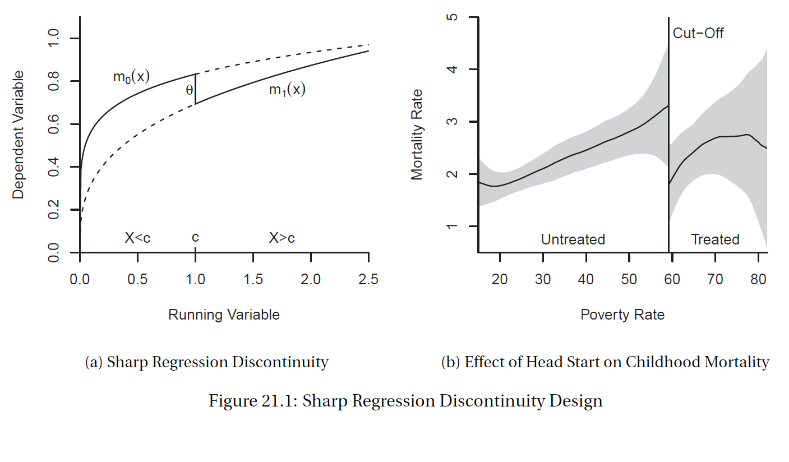
7 Regression Discontinuity Designs
Natura non facit saltus – Gottfried Leibniz
Regression Discontinuity Designs (RDD) are probably considered the most reliable way to estimate treatment effects after Randomised Control Trials. The only catch is that the target causal parameter is a local average treatment effect (LATE) rather than an ATE. There are further caveats, but we need to add more context to understand them.
What makes RDD appealing is that (i) the identification strategy is credible and it usually relies on credible assumptions, and (ii) at the estimation stage, there are not many things a researcher could do to convince us there is a treatment effect while in fact there isn’t.
For a comprehensive and up-to-date survey of the RDD literature, including recent methodological advances, see Cattaneo and Titiunik (2022, Cattaneo and Titiunik (2022), Annual Review of Economics).
The key idea of RDD is that, whenever treatment is determined by a threshold crossing rule, units in the neighbourhood of the threshold can be seen as randomly assigned to treatment. The argument is that, for instance, in a case where only students who score more that \(c\) points in the admission test are admitted into a school, then scoring (a) \(c + \varepsilon\) or (b) \(c - \varepsilon\) is random. Hence, we use (a) and (b) as treatment and control groups, respectively, which are balanced by virtue of the implied random assignment into treatment.
We follow Hansen (2022) closely for the textbook presentation of RDD, before moving to some of the recent extensions.
7.1 Notation
Let’s review the potential outcomes notation. Individual \(i\) can either be treated, \(D_{i}=1\) or untreated (i.e. element of the control group), \(D_{i}=0\).
The individual treatment effects \(\tau_i\) is defined as: \[ \tau_i = Y_i(1) - Y_i(0) \]
The observed outcome for any \(i\) is a function of treatment and can be expressed as a “switching equation”:
\[ \begin{aligned} Y_i & = D_i Y_i(1) + (1 - D_i)Y_i(0) \\ & = Y_i(0) + D_i\tau_i \end{aligned} \tag{7.1}\]
where \(Y_i(1)\) is the outcome in case of treatment and \(Y_i(0)\) is the outcome in absence of treatment.
hence the average treatment effect (ATE) is \(\mathbb{E}[\tau]\), while the ATE for a subpopulation with observed covariate \(X=x\) is \[ \tau(x)=\mathbb{E}[\tau \mid X=x] \]
7.3 Fuzzy RD
Fuzzy RD extends RD to situations where crossing the threshold leads to a jump in the probability of being treated, a jump that is not necessarily from zero to one, as in Sharp RD. In other words, the conditional probability of treatment \[ p(x)=\mathbb{P}[D=1 \mid X=x] \] is discontinuous at \(X=c\).
For a visualisation, see the below diagram from Hansen (2022).
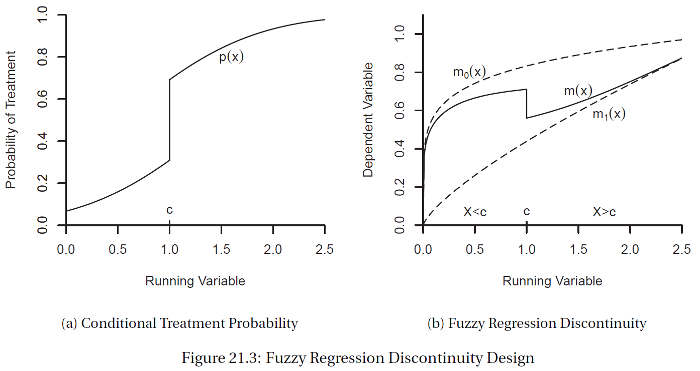
7.3.1 Identification: Fuzzy RD as IV
Henceforth, we mostly closely follow the slides by Blackwell, found here, particularly for the identification proof.
With a fuzzy design, the sample analog of Equation 7.2 is a Wald estimator like the one used to instrument variables (IV). This makes sense, as the running variable \(X_i\) can be seen as an instrument for treatment \(D_i\), since at the threshold is \(X_i\) only affects \(Y_i\) through \(D_i\). Convince yourself of this by inspecting the below: \[ \begin{aligned} \tau_{F R D} & = \frac{E[Y_i \mid X_i =c^{+}] - E[Y_i \mid X_i =c^{-}]}{E[D_i \mid X_i=c^{+}] - E[D_i \mid X_i=c^{-}]} \\ & =\frac{\text { effect of cutoff on } Y_i}{\text { effect of cutoff on } D_i} \end{aligned} \]
Moreover, we prove below that, with some additional assumptions, Fuzzy RD recovers the local average treatment effect (LATE) of \(D_i\) on \(Y_i\), just like in IV with imperfect compliance.
7.3.1.1 Additional assumptions
- Local Exogeneity of running variable. \(\left(\tau_i, D_i(X)\right) \text { is jointly independent of } X_i \text { near } c \text {. }\).
- Monotonicity. There exist \(\varepsilon>0 \text { such that } D_i\left(c + e\right) \geq D_i\left(c - e\right) \text { for all } 0<e<\varepsilon\), where \(D_i(.)\) is a function.
7.3.1.2 Compliance groups
- Compliers: \(D_i(c+e)=1\) and \(D_i(c-e)=0\)
- Defiers: \(D_i(c+e)=0\) and \(D_i(c-e)=1\). They are ruled out by the monotonicity assumption.
- Always-takers: \(D_i(c+e)=D_i(c-e)=1\)
- Never-takers: \(D_i(c+e)=D_i(c-e)=0\)
7.3.1.3 Theorem
Suppose Assumptions 1-7 hold. We then have \[ \lim _{e \rightarrow 0^{+}} E\left[\tau_i \mid D_i\left(c + e\right) - D_i \left(c - e\right) = 1\right] = \frac{ E[Y_i \mid X_i =c^{+}] - E[Y_i \mid X_i =c^{-}]}{E[D_i \mid X_i=c^{+}] - E[D_i \mid X_i=c^{-}]} \tag{7.3}\] where the conditioning event is “being a complier”, by definition.
7.3.1.4 Proof
Consider \[ E\left[Y_i \mid X_i=c+e\right]-E\left[Y_i \mid X_i=c-e\right]. \] We can rewrite each term by plugging in the switching equation Equation 7.2, \[ \begin{aligned} E\left[Y_i \mid X_i=c \pm e\right] & =E\left[Y_i(0)+\tau_i D_i \mid X_i=c \pm e\right] \\ & =E\left[Y_i(0)+\tau_i D_i(c \pm e)\right] \end{aligned} \] And hence rewrite the difference around the threshold as: \[ E\left[Y_i \mid X_i=c+e\right]-E\left[Y_i \mid X_i=c-e\right]=E\left[\tau_i\left(D_i(c+e)-D_i(c-e)\right)\right] \] which we can break down by complier group:
\[ \begin{aligned} E&\left[\tau_i\left(D_i(c+e)-D_i(c-e)\right)\right] \\ &= \quad E\left[\tau_i \times\left(D_i(c+e)-D_i(c-e)\right) \mid \text { complier }\right] \times \operatorname{Pr}[\text { complier }] \\ & \hspace{0.5cm} +E\left[\tau_i \times\left(D_i(c+e)-D_i(c-e)\right) \mid \text { defier }\right] \times \operatorname{Pr}[\text { defier }] \\ & \hspace{0.5cm} +E\left[\tau_i \times\left(D_i(c+e)-D_i(c-e)\right) \mid \text { always }\right] \times \operatorname{Pr}[\text { always }] \\ & \hspace{0.5cm} +E\left[\tau_i \times\left(D_i(c+e)-D_i(c-e)\right) \mid \text { never }\right] \times \operatorname{Pr}[\text { never }] \\ &=E\left[\tau_i \mid \text { complier }\right] \times \operatorname{Pr}[\text { complier }] \\ & \text{which written properly is} \\ &= E\left[\tau_i \mid D_i\left(c + e\right) - D_i \left(c - e\right) = 1\right] \times Pr\left[D_i\left(c + e\right) - D_i \left(c - e\right) = 1\right] \end{aligned} \]
Only compliers remain because the defier group is empty by monotonicity, and for always- and never-takers \(\left(D_i(c+e)-D_i(c-e)\right)\) is equal to zero (and equal to one for compliers), as the running variable of always- and never-takers does not affect their treatment variable \(D_i\).
Focusing on term \(Pr[complier]\), \[ \begin{align} &Pr\left[D_i\left(c + e\right) - D_i \left(c - e\right) = 1\right] \\ &= E[ D_i(c + e) - D_i(c - e)] \hspace{1cm}\text{, as } E[.] \text{ of a dummy is a proportion}\\ &= E[ D_i(c + e)] -E[D_i(c - e)] \\ &= E[ D_i \mid X_i = c + e] - E[ D_i \mid X_i = c - e] \end{align} \] Hence,
\[\begin{align} &E\left[Y_i \mid X_i=c+e\right]-E\left[Y_i \mid X_i=c-e\right] \\ &=E\left[\tau_i \mid D_i(c+e)-D_i(c-e) = 1\right] \times \{ E[ D_i \mid X_i = c + e] - E[ D_i \mid X_i = c - e] \} \\ &\Rightarrow \frac{E\left[Y_i \mid X_i=c+e\right]-E\left[Y_i \mid X_i=c-e\right]}{E\left[D_i \mid X_i=c+e\right]-E\left[D_i \mid X_i=c-e\right]} = E\left[\tau_i \mid D_i(c+e)-D_i(c-e) = 1\right] \end{align}\]
Taking the limit \(e \rightarrow 0\) completes the proof.
7.4 Estimation - both Sharp and Fuzzy
Estimation is rightfully considered the harder part of RD. It revolves around non-parametric issues and deeply engaging with some of the relevant literature requires a degree of statistical sophistication more typical to a statistician than an economist. Indeed, I could not find sources other the original academic articles presenting the technical debates in any depth. Keeping this in mind, and wanting to leave space to discuss interesting extensions to RD after the in-depth dive into the identification issues, I will be concise in this section.
In the spirit of relying on designs, rather than models, to identify and estimate causal effects, we want to introduce as little statistical modelling assumptions when estimating our causal effect \(\tau\) at the cutoff. We do this via non-parametric estimation. The discussion below focuses on Sharp RD, where only the limits in the numerator of \(\frac{E[Y_i \mid X_i =c^{+}] - E[Y_i \mid X_i =c^{-}]}{E[D_i \mid X_i=c^{+}] - E[D_i \mid X_i=c^{-}]}\) need to be estimated. However, the same procedures can be used to estimated the limits in the denominator in a Fuzzy RD setting, and hence both cases are implicitly covered.
To recap, our main object of interest are conditional expectation functions (CEF) around cutoff value \(c\) of running variable \(X\). In the sharp case, we focus on estimating \(E[Y_i \mid X ]\) in the neighbourhood of \(c\), \(E[Y_i \mid X = c \pm e]\). Independently of the estimator we choose, we have to face a bias-variance tradeoff: the more we widen our neighbourhood interval, called the bandwidth, the bigger our sample, the smaller our variance, and the larger our bias. Intuitively, as we include observations further away from the cutoff and our target limits \(E[Y_i \mid X_i =c^{+}]\) and \(E[Y_i \mid X_i =c^{-}]\), the worse we will be able to estimate such limits. While this is true for both continuous and discrete \(X\), with a discrete \(X\) dense enough around \(c\), you could literally use the two values of \(E[Y_i \mid X]\) closest to the right and left and take their difference. This choice is more salient with continuous \(X\) as \(X\) takes any particular value \(x\) with probability zero. Formally, the problem is to find the optimal bandwidth \(h\), based on some criterion, where \(h>0\) is a scalar such that \[ \left|X_i-c\right| \leq h \] This point is beautifully visualised in Cattaneo, Idrobo, and Titiunik (2019):
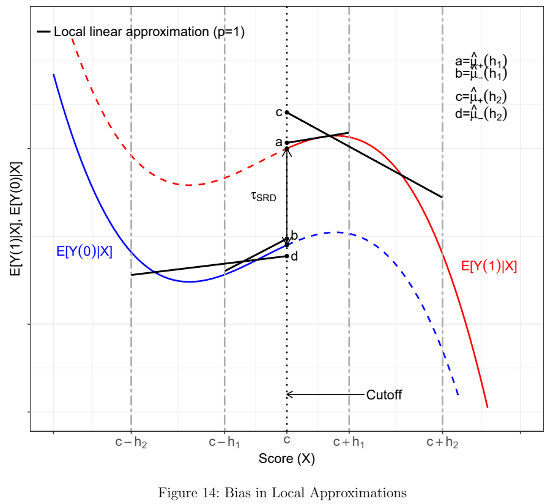
Within this bandwidth, our goal is to approximate \(E[Y_i \mid X]\) and we do it by using non-parametric local polynomial approximation methods. A global approach, using all observations, with a high-order polynomial is now only used in descriptive graphs in applied papers. On the other hand, the best-practice for the estimation of the treatment effect involves a local approach (as already mentioned) and the use of a low order polynomial — linear or quadratic. Using a global approach could lead to mistakes as the one represented in Angrist and Pischke (2009):
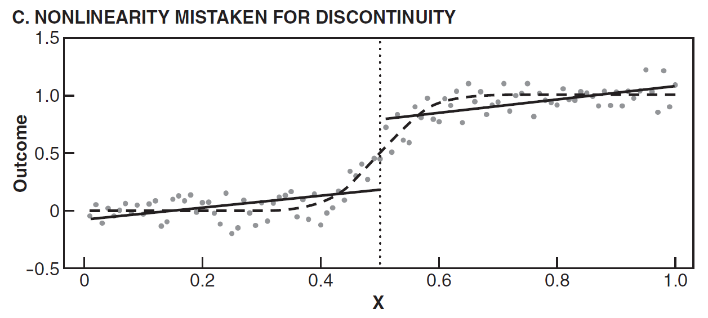
There is a page in Cattaneo, Idrobo, and Titiunik (2019) that summarises very nicely what local polynomial estimation involves, so let me simply report it:
- Choose a polynomial order \(p\) and a kernel function \(K(\cdot)\).
- Choose a bandwidth \(h\).
- For observations above the cutoff (i.e., observations with \(X_i \geq c\) ), fit a weighted least squares regression of the outcome \(Y_i\) on a constant and \(\left(X_i-c\right),\left(X_i-c\right)^2, \ldots,\left(X_i-c\right)^p\), where \(p\) is the chosen polynomial order, with weight \(K\left(\frac{X_i-c}{h}\right)\) for each observation. The estimated intercept from this local weighted regression, \(\hat{\mu}_{+}\), is an estimate of the point \(\mu_{+}=\mathbb{E}\left[Y_i(1) \mid X_i=c\right]\) \[ \hat{\mu}_{+}: \hat{Y}_i=\hat{\mu}_{+}+\hat{\mu}_{+, 1}\left(X_i-c\right)+\hat{\mu}_{+, 2}\left(X_i-c\right)^2+\cdots+\hat{\mu}_{+, p}\left(X_i-c\right)^p . \]
- For observations below the cutoff (i.e., observations with \(X_i<c\) ), fit a weighted least squares regression of the outcome \(Y_i\) on a constant and \(\left(X_i-c\right),\left(X_i-c\right)^2, \ldots,\left(X_i-c\right)^p\), where \(p\) is the chosen polynomial order, with weight \(K\left(\frac{X_i-c}{h}\right)\) for each observation. The estimated intercept from this local weighted regression, \(\hat{\mu}_{-}\), is an estimate of the point \(\mu_{-}=\mathbb{E}\left[Y_i(0) \mid X_i=c\right]\) \[ \hat{\mu}_{-}: \hat{Y}_i=\hat{\mu}_{-}+\hat{\mu}_{-, 1}\left(X_i-c\right)+\hat{\mu}_{-, 2}\left(X_i-c\right)^2+\cdots+\hat{\mu}_{-, p}\left(X_i-c\right)^p . \]
- Calculate the Sharp RD point estimate: \(\hat{\tau}_{\text{SRD}}=\hat{\mu}_{+}-\hat{\mu}_{-}\).
7.4.1 Kernel functions
The kernel function is a bounded probability density function, a “weighting function”, which is symmetric around zero. Following Hansen (2022), a (second-order) kernel function \(K(u)\) satisfies: 1. \(0 \leq K(u) \leq \bar{K}<\infty\), 2. \(K(u)=K(-u)\), 3. \(\int_{-\infty}^{\infty} K(u) d u=1\).
Three of the most used kernels in RDD work are:
- Uniform, or Rectangular: \(\quad K(u)=\left\{\begin{array}{cl}\frac{1}{2 \sqrt{3}} & \text { if }|u|<\sqrt{3} \\ 0 & \text { otherwise }\end{array}\right.\)
- Epanechnikov: \(K(u)=\left\{\begin{array}{cc} \frac{3}{4 \sqrt{5}}\left(1-\frac{u^2}{5}\right) & \text { if }|u|<\sqrt{5} \\ 0 & \text { otherwise }\end{array}\right.\)
- Triangular: \(K(u)=\left\{\begin{array}{cc} \frac{1}{\sqrt{6}}\left(1-\frac{|u|}{\sqrt{6}}\right) & \text { if }|u|<\sqrt{6} \\ 0 & \text { otherwise } \end{array}\right.\)
Visually (Cattaneo, Idrobo, and Titiunik (2019)),
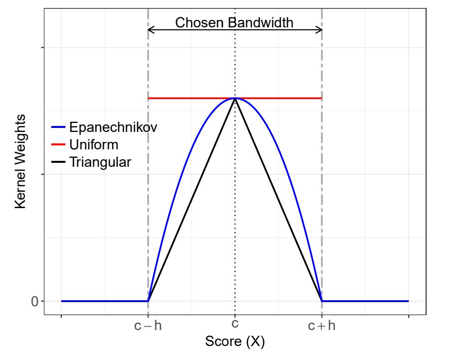
As can be seen in the above plot, Epanechnikov and Triangular kernels give the more weight to observations closer to cutoff \(c\), which turn out to be optimal to estimate \(E[Y_i \mid X_i =c^{+}]\) and \(E[Y_i \mid X_i =c^{-}]\). The Uniform kernel is also included as it is the one implicit when using OLS. In practice, the choice of kernel rarely has an impact on the on the estimates of interest, and it might even be reason for concern if it does.
7.4.2 R code simulations
Let’s sample and plot observation from a non-linear function.
Code
rm(list=ls())
library(ggplot2)
N <- 10000;
rho <- 0.3;
X <- rnorm(n = N, mean = 0, sd = 1);
hist(X, xlab = "Random value (X)", col = "grey",
main = "", cex.lab = 1.5, cex.axis = 1.5);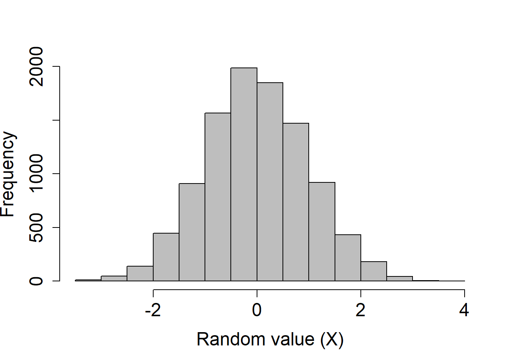
Code
Y <- (rho * X) + sqrt(1 - rho*rho) * rnorm(n = N, mean = 0, sd = 1);
# Set x=2, the point at which we are evaluating E[Y|X]
x <- 2
# Set bandwidth h
h <- 0.1
# Create dataframe
data <- data.frame(Y, X)We did not look into the simplest non-parametric approach to estimating a function, the Binned Means estimator, but this is how it would be implemented.
Code
# BINNED MEANS ESTIMATOR
# Define binned means estimator
binned_means_estimator <- function(x) {
data$truth <- 1*(abs(data$X - x) <= h)
data_true <- data[data$truth==TRUE, ]
data_true$num_bin <- sum(data_true$Y)
data_true$den_bin <- sum(data_true$truth)
return(data_true$num_bin[1] / data_true$den_bin[1])
}
# Create a vector of points of X, for which we will find the binned means
Xs <- c(-3,-2,-1,0,1,2,3)
# Run function on vector of Xs, generating vector of results
binned_estimates <- sapply(Xs, binned_means_estimator)
# Create dataframe
estimates1 <- data.frame(Xs, binned_estimates)
# Plot results
ggplot(data, aes(x=X, y=Y)) +
geom_point(size=2, shape=23) +
geom_point(estimates1, mapping=aes(x=Xs, y=binned_estimates), colour = "red")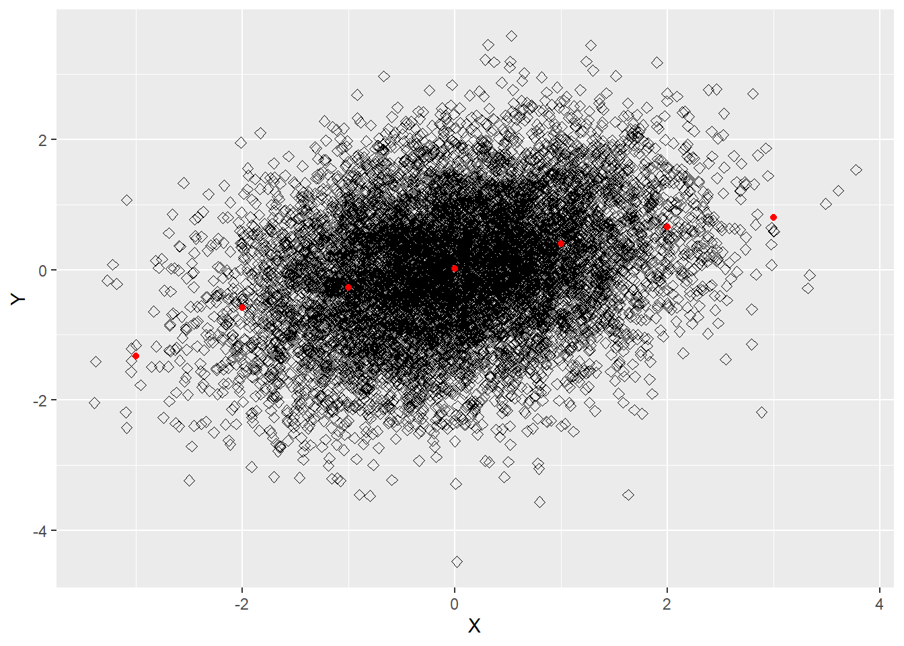
Its kernel function is an indicator function, which gives weight one to all observations within the bandwidth, given a point, and zero to all those outside of the bandwidth.
Proceeding to our kernels of interest — we said that the choice of bandwidth is not very consequential in practice. In the below example, this is definitely the case. In particular, the estimates produced by the Triangular and Gaussian kernels overlap to the point that they cannot be distinguished if both plotted together.
Code
#-------------------------------------------------------------------------------
# KERNEL REGRESSION WITH GAUSSIAN KERNEL
# Create dataframe
data <- data.frame(Y, X)
gaussian_kernel <- function(u) {
1/sqrt(2*pi)*exp(-(u^2)/2)
}
# Define binned means estimator
kernel_regression_gauss <- function(x) {
data$kernel <- gaussian_kernel((data$X - x)/h)
numerat <- sum(data$Y * data$kernel)
denominat <- sum(data$kernel)
return(numerat / denominat)
}
# Create a vector of points of X, for which we will find the binned means
Xs <- c(-3,-2,-1,0,1,2,3)
# Run function on vector of Xs, generating vector of results
kernel_estimates <- sapply(Xs, kernel_regression_gauss)
# Create dataframe
estimates2 <- data.frame(Xs, kernel_estimates)
# Plot results
ggplot(data, aes(x=X, y=Y)) +
geom_point(size=2, shape=23) +
geom_point(estimates1, mapping=aes(x=Xs, y=binned_estimates), colour = "red") +
geom_point(estimates2, mapping=aes(x=Xs, y=kernel_estimates), colour = "green")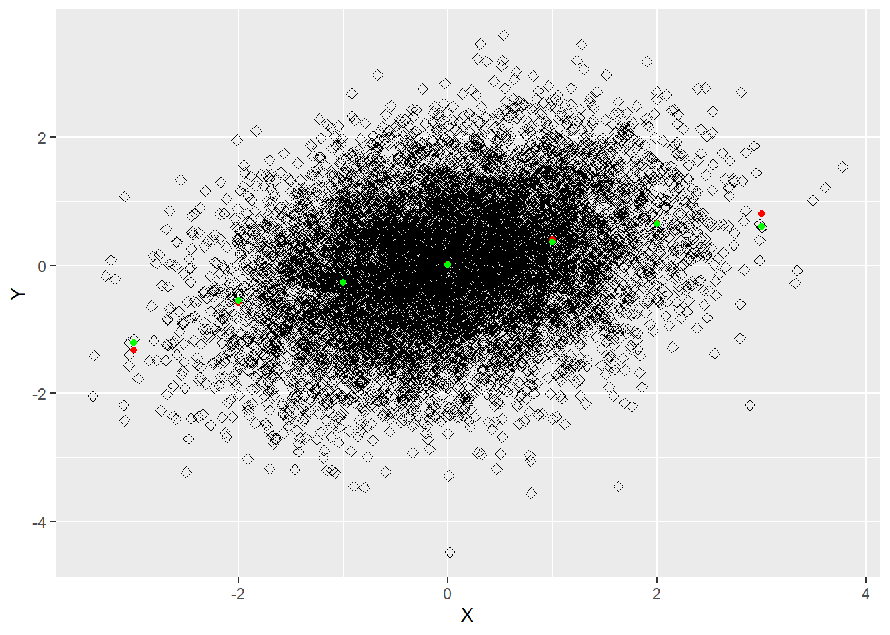
Code
#-------------------------------------------------------------------------------
# KERNEL REGRESSION WITH TRIANGULAR KERNEL
# Create dataframe
data <- data.frame(Y, X)
triangular_kernel <- function(u) {
ifelse(abs(u) < sqrt(6),
(1 / sqrt(6)) * (1 - (abs(u) / sqrt(6))),
0)
}
# Define binned means estimator
kernel_regression_triang <- function(x) {
data$kernel <- triangular_kernel((data$X - x)/h)
numerat <- sum(data$Y * data$kernel)
denominat <- sum(data$kernel)
return(numerat / denominat)
}
# Create a vector of points of X, for which we will find the binned means
Xs <- c(-3,-2,-1,0,1,2,3)
# Run function on vector of Xs, generating vector of results
kernel_estimates_tr <- sapply(Xs, kernel_regression_triang)
# Create dataframe
estimates3 <- data.frame(Xs, kernel_estimates_tr)
# Plot results
ggplot(data, aes(x=X, y=Y)) +
geom_point(size=2, shape=23) +
geom_point(estimates1, mapping=aes(x=Xs, y=binned_estimates), colour = "red") +
geom_point(estimates2, mapping=aes(x=Xs, y=kernel_estimates), colour = "green") +
geom_point(estimates3, mapping=aes(x=Xs, y=kernel_estimates_tr), colour = "yellow")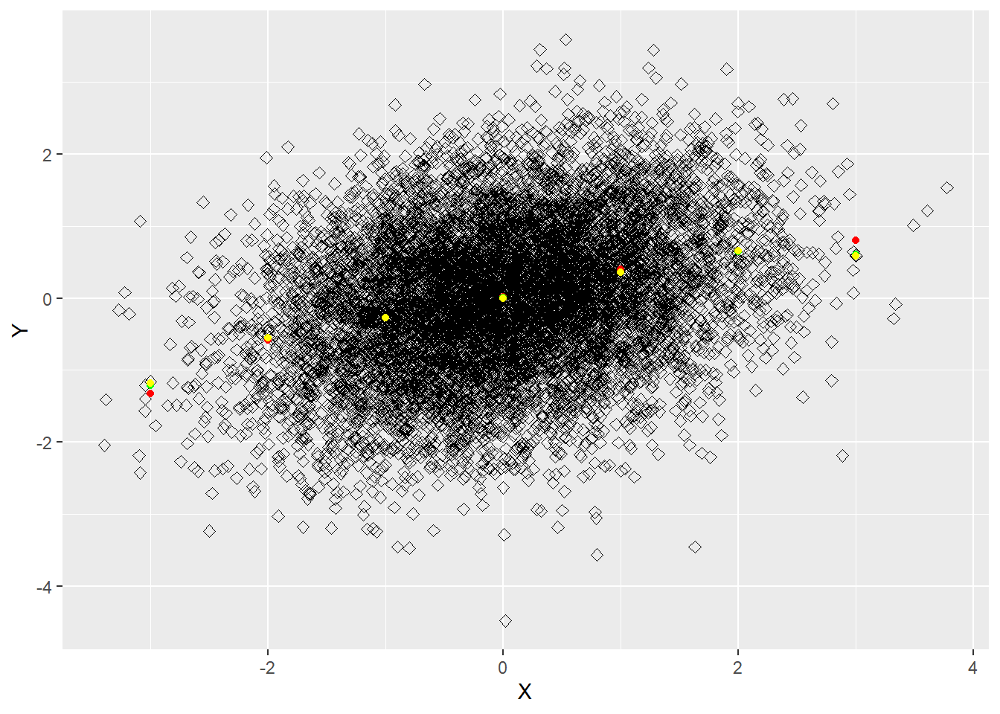
7.4.3 Polynomial order
Following Cattaneo, Idrobo, and Titiunik (2019), the binned means estimator is a polynomial fit of order zero, which has poor properties at boundary points, like our cutoffs. Intuitively, the greater the slope of the CEF around the cutoff, the greater the bias. Higher-order polynomials can lead to overfitting and, given a bandwidth size, increase the variance of the RD estimator. This has lead to a near consensus on using first order polynomials, i.e. the local linear RD estimator, which satisfactorily balances simplicity, stability and precision.
7.4.4 Bandwidth size
The issue of bandwidth size is a thorny and critical one. Its importance can be easily appreciated in the simulation below. Say we have the following non-linear CEF:
Code
library(ggplot2)
library(tidyverse)
dat <- tibble(
x3 = rnorm(1000, 5, 25)
)
dat <- dat %>%
mutate(
D2 = if_else(x3 >= 0, 1, 0),
y5 = (x3/10)^3 + 100*D2 + rnorm(n(), 0, 50)
)
# figure
ggplot(aes(x3, y5, colour = factor(D2)), data = dat) +
geom_point(alpha = 0.5) +
geom_vline(xintercept = 0, colour = "grey", linetype = 2) +
geom_smooth(method = loess, se = F) +
xlim(-50,50) +
ylim(-250, 400) +
labs(x = "Test score (X)", y = "Potential Outcome (Y)")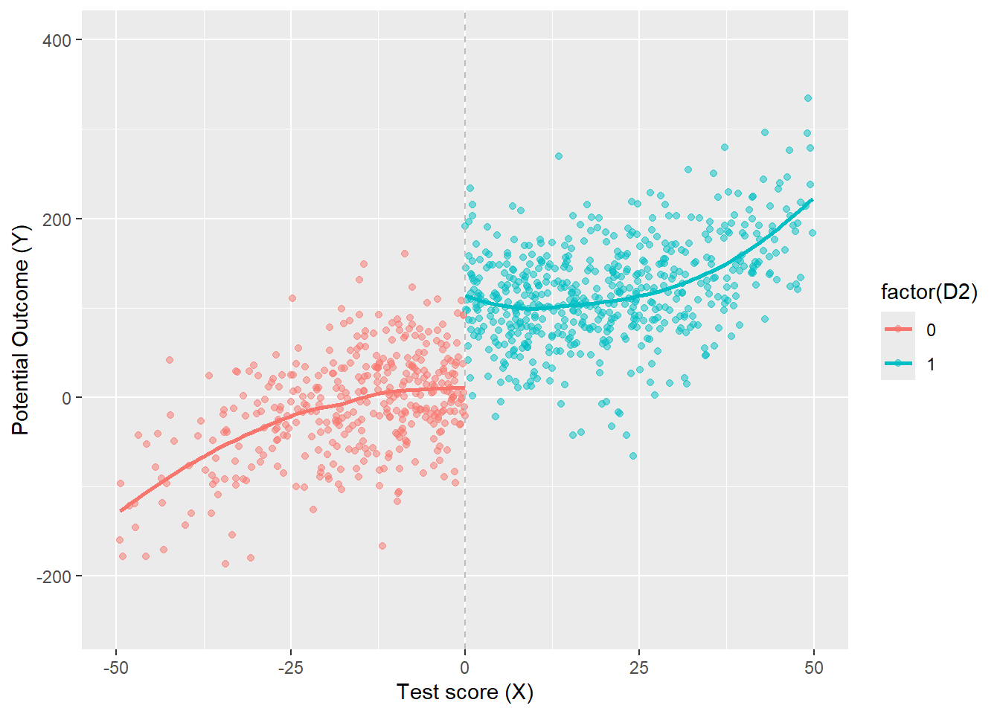
Then, the choice of bandwidth will impact our treatment effect estimate (yes, I could have engineered this a little bit better, with a more dramatic effect, but time is finite).
Code
dat$term <- x - 0
bandw1 <- 10
bandw2 <- 20
# figure
ggplot(aes(x3, y5, colour = factor(D2)), data = dat) +
geom_point(alpha = 0.5) +
geom_vline(xintercept = 0, colour = "grey", linetype = 2) +
geom_smooth(method = loess, se = F) +
stat_smooth(data=subset(dat, x3 >= 0 & x3<= bandw2), method="lm", geom="line", colour="blue", alpha = 0.8, size = 1.5) +
stat_smooth(data=subset(dat, x3 < 0 & x3>= -bandw2), method="lm", geom="line", colour="blue", alpha = 0.8, size = 1.5) +
stat_smooth(data=subset(dat, x3 >= 0 & x3<= bandw1), method="lm", geom="line", colour="red", alpha = 0.8, size = 1.5) +
stat_smooth(data=subset(dat, x3 < 0 & x3>= -bandw1), method="lm", geom="line", colour="red", alpha = 0.8, size = 1.5) +
xlim(-50,50) +
ylim(-250, 400) +
labs(x = "Running variable (X)", y = "Observed Outcome (Y)")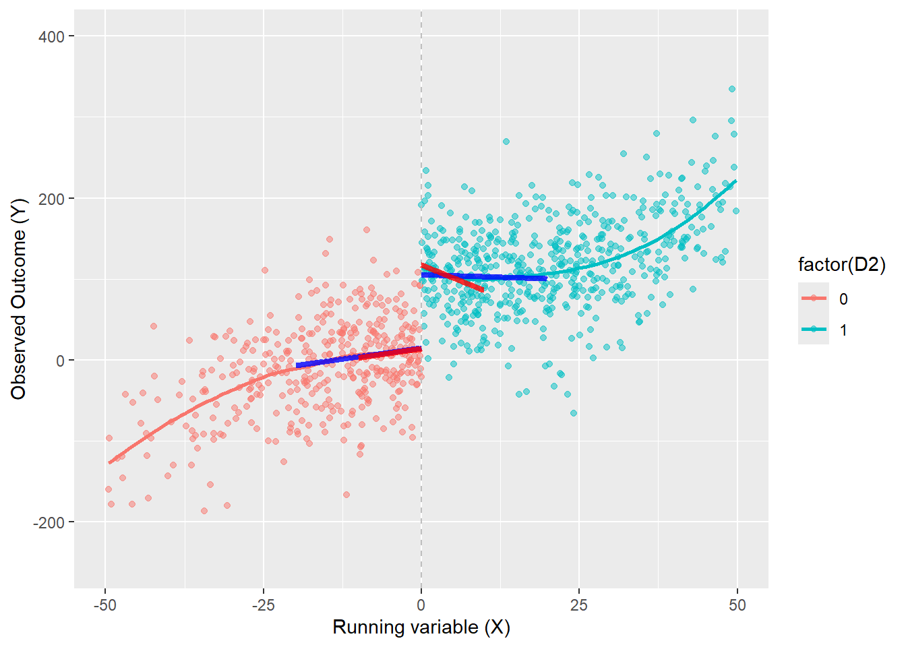
Hansen (2022) advocates for approaches that aim at producing a bandwidth with global accuracy, while Cattaneo, Idrobo, and Titiunik (2019) and applied researchers favour methods targeting the cutoff. We present the latter — closely following Cattaneo, Idrobo, and Titiunik (2019) — as it is better documented, easier to implement and widely adopted in the applied literature. Being data-driven, this approach has the important benefit of dispelling any suspicion/temptation of specification searching.
Bandwidth size \(h\) is a tuning parameter that controls the bias-variance tradeoff (\(\uparrow h \Rightarrow \uparrow bias,\downarrow variance\)). This can be seen via the mean squared error (MSE) of the estimator: \[ \operatorname{MSE}(\hat{\tau}_{\mathrm{SRD}})= \underbrace{h^{2(p+1)} \mathcal{B}}_{{Bias }^2 \equiv \mathscr{B}^2} + \underbrace{\frac{1}{n h} \mathcal{V}}_ {Var \equiv \mathscr{V}} \] where \(p\) is the polynomial order, and \(\mathcal{B}\) and \(\mathcal{V}\) are the leading terms, respectively, of the bias and variance of \(\hat{\tau}_{\mathrm{SRD}}\), the RD point estimator.
The general form of the bias \(\mathscr{B}\) is determined by the bandwidth \(h^{2(p+1)}\) and the quantities \[ \mathcal{B}=\mathcal{B}_{+}-\mathcal{B}_{-}, \quad \mathcal{B}_{-} \approx \mu_{-}^{(p+1)} B_{-}, \quad \mathcal{B}_{+} \approx \mu_{+}^{(p+1)} B_{+} \] where the derivatives \[ \mu_{+}^{(p+1)}=\lim _{x \downarrow c} \frac{d^{p+1} \mathbb{E}\left[Y_i(1) \mid X=x\right]}{d x^{p+1}} \quad \text { and } \quad \mu_{-}^{(p+1)}=\lim _{x \uparrow c} \frac{d^{p+1} \mathbb{E}\left[Y_i(0) \mid X=x\right]}{d x^{p+1}} \] are related to the “curvature” of the unknown regression functions for treatment and control units, respectively, and the known constants \(B_{+}\)and \(B_{-}\)are related to the kernel function and the order of the polynomial used. These calculations assume a common bandwidth \(h\), but the expressions can be extended to allow for different bandwidths on the left and right of the cutoff.
Approximating \(\mathbb{E}\left[Y_i(0) \mid X=x\right]\) and \(\mathbb{E}\left[Y_i(1) \mid X=x\right]\) with a polynomial of order \(p\), their bias \(\mathcal{B}\) will depend on the \(p+1\) derivative of \(\mathbb{E}\left[Y_i(d) \mid X=x\right]\) w.r.t. the running variable. E.g., if my approximation is linear but the CEFs \(\mathbb{E}\left[Y_i(d) \mid X=x\right]\) are very curved (high second derivatives), my bias will be large. If the CEFs are instead truly linear, my bias will be zero.
This can also be seen graphically in the first figure of Section 8.4, which shown that a greater \(h\) can lead to a poorer local approximation of the CEF (also called “smoothing bias”).
On the variance front,\(\mathscr{V}\) depends on sample size and bandwidth via \(\frac{1}{n h}\) and further depends on the below factors, among which the density \(f\) of the running variable at the cutoff: \[ \mathcal{V}=\mathcal{V}_{-}+\mathcal{V}_{+}, \quad \mathcal{V}_{-} \approx \frac{\lim _{x \rightarrow c^{-}} \mathbb{V}\left[Y_i(0) \mid X_i=x\right]}{f} V_{-}, \quad \mathcal{V}_{+} \approx \frac{\lim _{x \rightarrow c^{+}} \mathbb{V}\left[Y_i(0) \mid X_i=x\right]}{f} V_{+} \] where known scalars \(V_{-}\)and \(V_{+}\) are ” related to the kernel function and the order of the polynomial used”. Dependency on \(f\) highlights the intuitive notion that having many observations near the cutoff is important.
Finally, the optimal bandwidth is the one solving the minimisation of the MSE approximation, i.e. \[
h_{\mathrm{MSE}} \equiv \mathrm{argmin}_{h>0}\left(h^{2(p+1)} \mathcal{B}^2+\frac{1}{n h} \mathcal{V}\right) =
\left(\frac{\mathcal{V}}{2(p+1) \mathcal{B}^2}\right)^{1 /(2 p+3)} n^{-1 /(2 p+3)}
\] This shows that more observations, \(n\), lead to a smaller optimal \(h\), as they
allow to reduce bias as no variance cost. Moreover, \(h_{\mathrm{MSE}}\) is positive in \(\mathcal{V}\) and negative in \(\mathcal{B}\).
In practice, this “implemented by constructing preliminary plug-in estimates of the unknown quantities”.
7.5 Modern Implementation with rdrobust
The rdrobust package by Calonico, Cattaneo, and Titiunik has become the standard tool for RDD estimation in applied work. It implements MSE-optimal bandwidth selection (as described above), robust bias-corrected inference, and a range of complementary procedures for visualization, density testing, and power calculations. The package handles both sharp and fuzzy designs and automates the choice of bandwidth, polynomial order, and kernel function, while producing confidence intervals with correct coverage properties. See rdpackages.github.io for the full suite of packages.
7.5.2 RD visualization
The rdplot function produces publication-quality RD plots with automatic bin selection, using a data-driven procedure to choose the number and location of bins on each side of the cutoff.
Code
rdplot(Y, X, c = 0,
title = "",
x.label = "Running Variable",
y.label = "Outcome")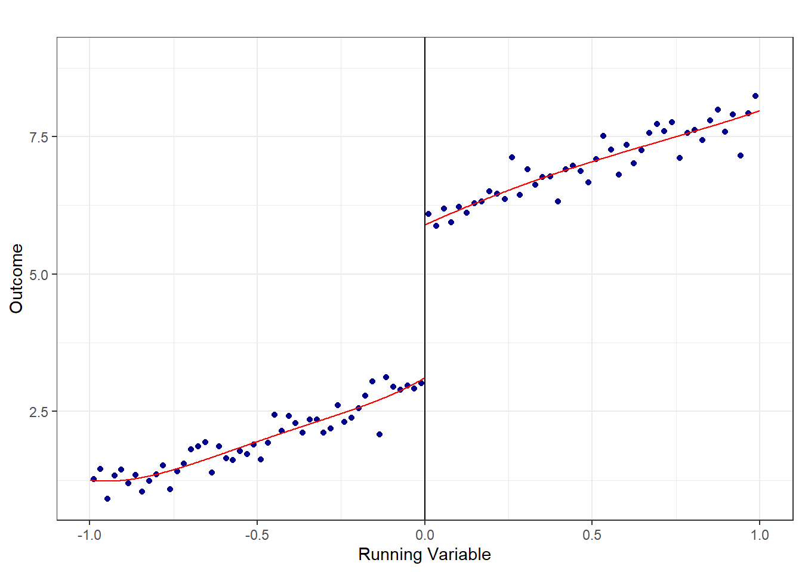
7.5.3 Density testing with rddensity
A key validity check in any RDD is whether the density of the running variable is continuous at the cutoff. The rddensity package implements the manipulation test of Cattaneo, Jansson, and Ma (2020), which improves upon McCrary (2008) by using local polynomial density estimation with robust bias-corrected inference.
Code
library(rddensity)
density_test <- rddensity(X)
summary(density_test)
Manipulation testing using local polynomial density estimation.
Number of obs = 2000
Model = unrestricted
Kernel = triangular
BW method = estimated
VCE method = jackknife
c = 0 Left of c Right of c
Number of obs 1023 977
Eff. Number of obs 411 285
Order est. (p) 2 2
Order bias (q) 3 3
BW est. (h) 0.416 0.308
Method T P > |T|
Robust -0.508 0.6114
P-values of binomial tests (H0: p=0.5).
Window Length / 2 <c >=c P>|T|
0.030 34 20 0.0759
0.060 70 51 0.1014
0.090 94 86 0.6020
0.119 119 112 0.6931
0.149 141 151 0.5985
0.179 169 184 0.4562
0.209 201 205 0.8817
0.239 237 230 0.7813
0.269 267 254 0.5991
0.298 299 276 0.3589Code
rdplotdensity(density_test, X)
$Estl
Call: lpdensity
Sample size 1023
Polynomial order for point estimation (p=) 2
Order of derivative estimated (v=) 1
Polynomial order for confidence interval (q=) 3
Kernel function triangular
Scaling factor 0.511755877938969
Bandwidth method user provided
Use summary(...) to show estimates.
$Estr
Call: lpdensity
Sample size 977
Polynomial order for point estimation (p=) 2
Order of derivative estimated (v=) 1
Polynomial order for confidence interval (q=) 3
Kernel function triangular
Scaling factor 0.488744372186093
Bandwidth method user provided
Use summary(...) to show estimates.
$Estplot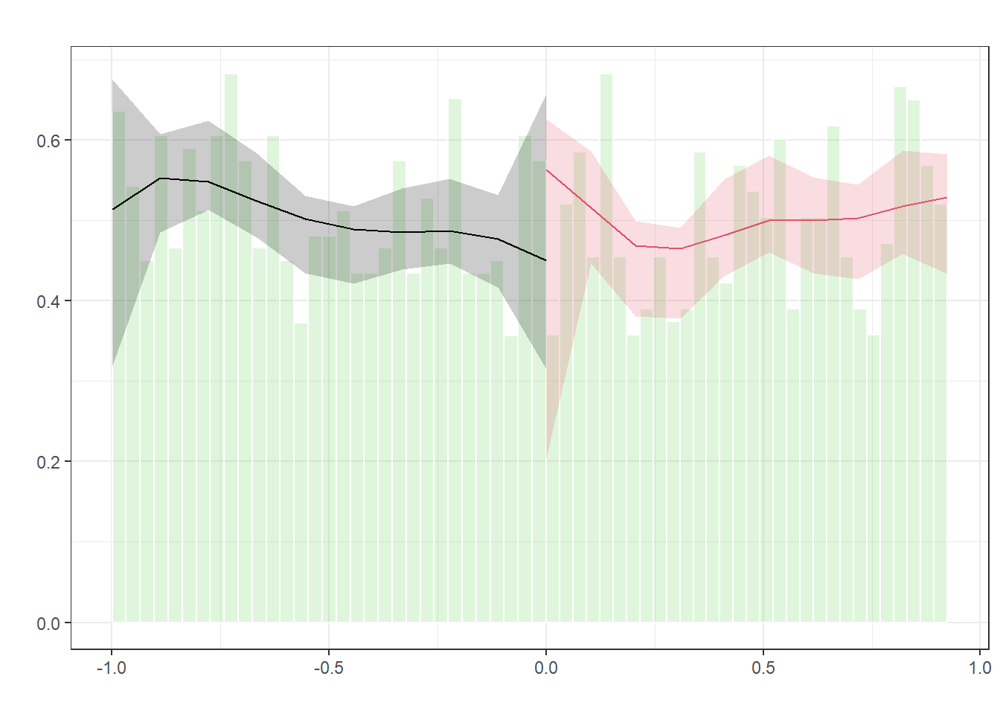
7.6 Some Unordered Thoughts
There is less agreement around modelling choices within RDD than one would expect. At a first glance, open debates seem to be about some ``technical details’’, but as the number of such debates piles up, one is left with the feeling that things are not as settled as they seem. Different textbook and different scholar make different recommendations, and the task of navigating these arguments around non-parametric statistics is rather daunting to applied economists like me.
I was very much glad when I saw that Kettlewell and Siminski (2022) shares my same sentiment on the literature. They propose a model-selection algorithm for regression discontinuity designs — more on this later. But what are these debates? They centre key decisions the analyst has to make when conducting an RDD study: 1. Polynomial order; 2. Bandwidth size; 3. Kernel type (not consequential); 4. What constitutes good sensitivity analysis.
On point (1), Gelman and Imbens (2019) argue in favour of local linear regression (quadratic at most) while Pei et al. (2021) propose a criterion to choose the polynomial order.
On point (2), Hansen (2022) recommends criteria aiming at maximising global accuracy, claiming it is “more accurate and less variable”. On the other hand, Cattaneo, Idrobo, and Titiunik (2019) recommend a criterion maximising accuracy at the cutoff.
Point 3. Luckily, while the problem of choosing the “best” kernel is thorny, it has little impact on the estimates. Usually, econometricians recommend either a triangular or Epanechnikov kernel for their nice properties.
There seem to be some confusion on point (4), as journals seem to be putting an excessive emphasis on robustness checks. As Hansen (2022) remarks, it is normal to see estimated treatment effects change as the bandwidth changes, particularly if the regression function is non-linear.
There is even disagreement on how to plot the data, as Hansen (2022) pushes against the established practice of plotting scatterplots of binned data, which embed a different and worse kernel than the one used for estimation and reduce transparency.
7.7 Manipulation
7.7.1 Local Randomisation and Fuzzy RD
One of the main assumptions required for a valid RD is local randomisation. This means that units in the neighbourhood of \(c\) should be (as if) randomly assigned into treatment. While this has to hold for all “local” units in Sharp RD, this only applies to complier units in Fuzzy RD (always- and never-takers have fixed treated assignment). Let me add a couple of remarks on Fuzzy RD before we move on to manipulation.
In a Fuzzy RD design, the probability of being treated jumps at the cutoff, but no manipulation of the running variable occurs. For instance, in Asher and Novosad (2020) villages with a population (\(X_i\)) just above 1,000 (\(c\)) are much more likely to receive treatment (construction of roads) than those just below 1,000, due to a policy. Of course the decision of which “\(c^{+}\) villages” receive treatment is likely a function of political and economic factors and hence endogenous, i.e. not random. Thdoes not affect the validity of Fuzzy RD. This endogeneity does not invalidate local randomisation as we focus on compliers: while some villages would not get roads at any value around \(c\) and some would get roads at any value around \(c\), complier villages are those that would not get roads at \(c^{-}\) but would at \(c^{+}\). It is these villages that under Fuzzy RD get randomly assigned into treatment.
As long as the policy is followed to some degree, thus generating a discontinuity in the treatment probability, it will be possible (and appropriate) to estimate the local effect of building new roads on some outcome of interest. Local randomisation remains unaffected.
7.7.2 Ishihara and Sawada (2022)
On the contrary, a manipulation of the running variable might invalidate identification in a RD design. We setup this discussion following Ishihara and Sawada (2020), as their rigourous framework is useful for thinking about this issue and better understanding other important papers.
Let’s use their toy example and restrict the discussion to sharp design, although it generalises to fuzzy designs. We also drop subscript \(i\). There is an admission test, and students must score more than \(c\) in order to be admitted (“treated”). Hence, the treatment dummy is \(D = 1\{X \geq c\}\). They define local randomisation using two consequences of the original concept:
A score \(R\) is locally randomized if (1) the density function of the score \(X\) is continuous at the cutoff and (2) the conditional means of potential outcomes \(Y(d), d \in\{0,1\}\), are continuous at the cutoff.
The crucial notion they introduce is \(X^*\), a latent score as opposed to the observed score \(X\). This is the score that would have been achieved had the cutoff not existed / had been ignored. It is a counterfactual concept, and while it is unique and straightforward in this example, it can represent different scenarios in contexts such as spatial RDD. E.g. given a policy that applies to houses east of a river, \(X^*\) could either be the location of a house absent the policy but present the river, or present the policy but absent the river (interesting due to sorting in house location).
Manipulation occurs whenever \(X \neq X^*\).
They show how not all manipulation is harmful to identification, and identify two channels for harmful manipulation, best illustrated with the help of a diagram (from their paper):
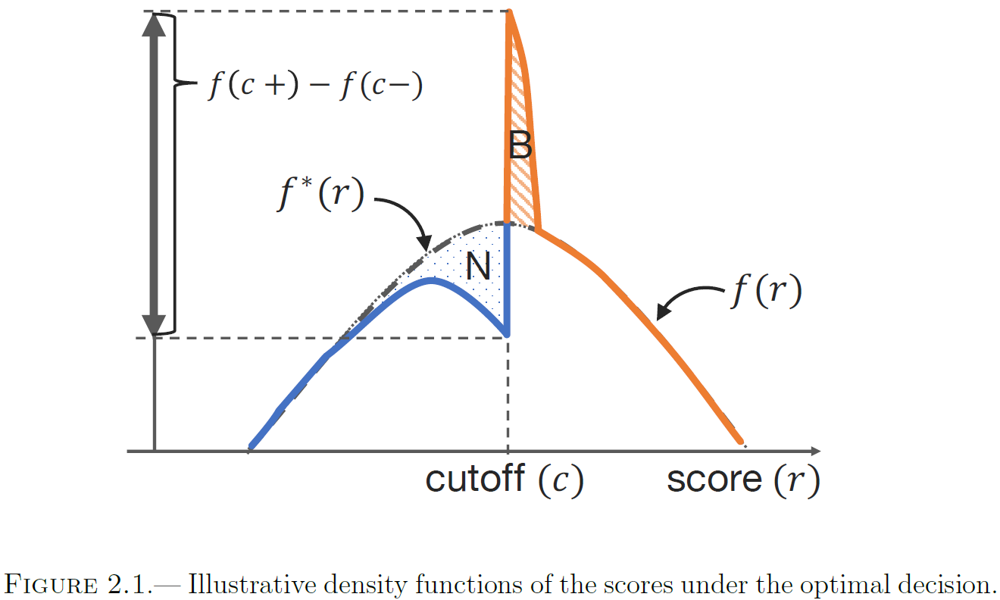
This diagram illustrates how in a simple model, teachers select and push just above the cutoff only those \(c^{-}\) students for which the expected benefit of treatment is higher than the expected cost of manipulating. Those for which the push is worth it. The teacher’s ability to precisely select certain \(c^{-}\) students is called precise decision, and is done based on their latent score \(X^*\), while their ability to precisely give these students a particular new \(X \neq X^*\) score is called precise control.1
The teacher pushes manipulated scores just above the cutoff (precise control), leading to bunching at \(c^+\). The teacher manipulates only if \(X^* < c\) (precise decision), leading to a notch at \(c^+\). This one-sidedness is important, as we will see soon.
The fact that the teacher (in the model, and likely in the real-world too) picks only certain students to push, i.e. those with higher benefits, leads to imbalance between \(\{X^* < c\}\) and \(\{X^* < c, X^* = X\}\).
Imprecise control — e.g. selected students retake, but some new scores are still below \(c\) — dissipates the bunch, but not the notch (not fully), as only some manipulated student do not make it to \(c^{+}\). The control and decision channels operate separately.
Formally, we can define the two channels by decomposing \(E[Y(d) \mid X = x]\) by manipulation status \(X^* \neq X\),
\[ \begin{aligned} E[Y(d) \mid X=x]= & E\left[Y(d) \mid X=x, X \neq X^*\right] P\left(X \neq X^* \mid X=x\right) \\ & +E\left[Y(d) \mid X^*=x, X=X^*\right] P\left(X=X^* \mid X=x\right) \\ = & \underbrace{E\left[Y(d) \mid X=x, X \neq X^*\right] f\left(x \mid X \neq X^*\right)}_{\text {local randomization of } X \text { for } X \neq X^*} P\left(X \neq X^*\right) / f(x) \\ & +\underbrace{E\left[Y(d) \mid X^*=x, X=X^*\right] f^*\left(x \mid X=X^*\right)}_{\text {local randomization of } X^* \text { for } X=X^*} P\left(X=X^*\right) / f(x), \end{aligned} \] by applying Bayes Rule, where \(f^*\) is the density function of \(X^*\).
Now, we know that \(E[Y(d) \mid X=x]\) needs to be continuous in \(c\) to have identification. What the RHS shows is that, under manipulation, we can still have identification if the first term (\(X \neq X^*\)) and the second term (\(X = X^*\)) are continuous in \(c\). Loosely, if the manipulation is such that the teacher effectively picks the \(c^-\) students to manipulate at random (imprecise decision) and such students end up with a random new score around \(c\) (imprecise control), then identification holds.
This can make sense in a context where the teacher only observes a noisy signal of the student’s benefit from manipulation \(\beta\) and rather than assigning a new mark, is only able to assign them a re-take of the exam, at the condition that the new score is the only valid score. Here, we might expect continuity in both RHS terms at \(c\).
Independently of how realistic these situations might seem to you, such framework is very useful to think rigorously about manipulation and identifying possible identification violations and their severity. Indeed, a key point emerging from the above is that manipulation can take 4 shapes, of which only 3 (highlighted) are harmful:
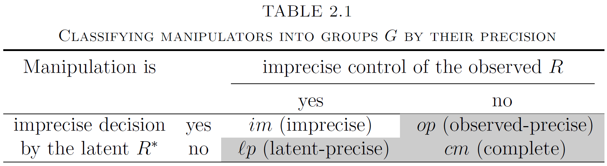
This framework allows Ishihara and Sawada to realise that the ever-present McCrary (2008) test, used to test for discontinuities in \(E[Y(d) \mid X = x]\) at \(c\), needs an auxiliary assumption to be valid.
7.7.3 Excursus on McCrary (2008)
McCrary (2008)’s density test works in the following way:
- generate a finely gridded histogram;
- smooth the histogram using local linear regression;
2.1. no bin crosses the point of discontinuity; 2.2. running variable centred around \(c\), as usual;
- target parameter: \(\theta=\ln \lim _{r \downarrow c} f(r)-\ln \lim _{r \uparrow c} f(r) \equiv \ln f^{+}-\ln f^{-} .\)
- use a Wald test to test for equality of the log difference of the coefficients on the intercepts and estimate \(\widehat{\theta}\): \[ \widehat{\theta} \equiv \ln \widehat{f}^{+}-\ln \widehat{f}^{-} \]
Now, while McCrary says that monotonic manipulation, \(X \geq X^* \text { or } X \leq X^*\), is key assumption required so this test can check whether manipulation occurred. Ishihara and Sawada (2020) shows that the key assumption, necessary and sufficient, is instead one-sided manipulation, i.e. that all precise manipulation (in control and decision) must be guided by either an incentive to treat (push above \(c\)) or untreat (push below \(c\)) but not both simultaneously. In our example, this simultaneity would occur if there were multiple teachers marking, with different incentives, or a single that applies different principles with different students. Moreover, this restriction does not affect imprecise manipulators, which are instead unduly restricted by the monotonicity assumption.
7.7.4 Final remarks on Manipulation
Ishihara and Sawada (2020) make two further contributions:
They show that a successful balance test, to test for randomisation around \(c\), does not “guarantee” local randomisation, while McCrary (2008) does, under their auxiliary assumption. Its appropriate use is to check for balance of mean covariates, a necessary but not sufficient condition for identification.
They provide manipulation-robust worst-case bounds, more general than Gerard, Rokkanen, and Rothe (2020) bounds, which they nest as a special case when precise decisions are absent. They main issue with their bounds is they can only be used as a robustness check when the discontinuity is small. They can be useful when the density test is close to rejection and the detected jump small. R and Stata packages are available to implement Gerard, Rokkanen, and Rothe (2020) bounds. ::: {.callout-note} One of the authors indicated that this interpretation of Gerard’s bounds is likely incorrect, as such bounds are also valid for cases with precise decision (the manuscript will be updated soon). :::
7.8 Wanna Get Away?
RD is very much liked by both academic and practitioners for its identification strength. However, a valid critique is that the target causal effect is often not only local, but relevant to a potentially small sub-population, the compliers. This can be discouraging to academics and policy-makers trying to learn something a bit more general than that. How do we know how much our estimates generalise when moving away from the cutoff? Angrist and Rokkanen (2015) come to the rescue.
To do this, we need start from the nice and weak RD assumptions and add a couple of stronger ones on top, more in the style on matching estimators. Because of this matching element, this approach will only be credible if our set of covariates is rich, and most importantly includes most of the conceivable confounders (see the chapter on directed acyclic graphs for a definition of confounders).
- Conditional Independence Assumption (CIA). Potential outcomes are assumed to be mean-independent after conditioning on covariate vector \(\mathbf{z_i}\) \[ E[Y_i(d) \mid x_i, \mathbf{z_i}] = E[Y_i(d) \mid \mathbf{z_i}]; \hspace{2pt} d=0, 1. \]
- Common support. The probability of receiving treatment for each possible value of the vector \(\mathbf{z_i}\) is strictly within the unit interval, i.e. \[ 0<P\left[D_i=1 \mid \mathbf{z_i}\right]<1 \] This guarantees that matches between comparable treated and untreated units are possible.
These assumptions are not required when focusing on the neighbourhood of \(c\), as local randomisation leads to balance and comparability of treated and untreated units. As we move away from \(c\), including a growing number of units, the mean characteristics of treated and untreated units will start to differ, and this needs to be controlled for. The treatment is a function of the running variable and the running variable is a function of some factors \(\mathbf{z_i}\), so that \(D_i = D_i(x_i(\mathbf{z_i}, \epsilon_i))\), where \(\mathbf{z_i}\) is observed and \(\epsilon_i\) is not. In the neighbourhood of \(c\), local randomisation “controls for” \(\mathbf{z_i}\), and \(\epsilon_i\), while outside of it we need to either include \(\mathbf{z_i}\) in our regression directly or use to calculate a propensity score, with which the regression is then weighted. And we should argue/hope that \(\epsilon_i\) is does not affect \(x_i\) much.
7.8.1 Testable implications
Notice that the CIA implies \[ E\left[Y_{i}(1) \mid x_i, \mathbf{z_i}, x_i \geq 0\right]=E\left[Y_{i}(1) \mid \mathbf{z_i}\right]=E\left[Y_{i}(1) \mid \mathbf{z_i}, x_i \geq 0\right], \] so we should expect that covariates that satisfy the CIA obey \[ E\left[Y_i \mid x_i, \mathbf{z_i}, D_i=1\right]=E\left[Y_i \mid \mathbf{z_i}, D_i=1\right], \] to the right of the cutoff — analogous implications apply to the left of the cutoff.
In crude and applied terms, we can test the CIA by running one regression per side of the cutoff. Each regression should include both \(x_i\) and \(\mathbf{z_i}\) and the \(x_i\) coefficient should be statistically insignificant for the CIA to hold.
It is also useful to plot the residuals of regression \[ Y_i = \alpha + \vec{\beta} \cdot \mathbf{z_i} + \varepsilon_i \] against the running variable \(x_i\). You should get something that looks like the bottom panel, and different from the top panel, of the figure below (Angrist and Rokkanen 2015):
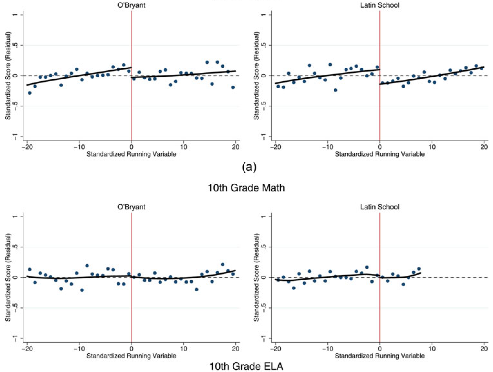
i.e. a flat line with a jump around the cutoff, if the policy has an impact.
Angrist and Rokkanen (2015) estimate the treatment effect first using linear reweighting and then using propensity-score weights. Propensity score methods are useful for checking for overlap, using plots as the below
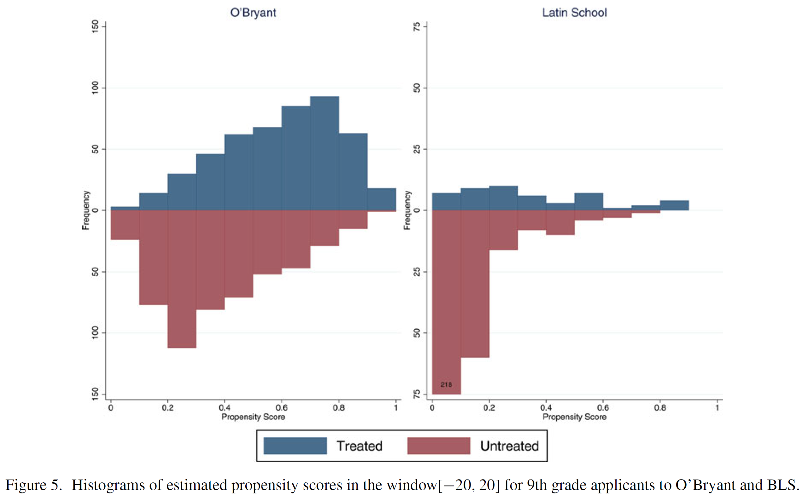
However, they note that linear reweighting seems to produce more precise estimates.
Another two papers similar in spirit are Dong and Lewbel (2015) and Cerulli et al. (2017), which notice how the derivative of the CEF at \(c\) can be easily retrieved with no additional effort from standard estimation procedures and this can be informative of (i) how treatment effects vary (marginally) away from the cutoff, given the actual cutoff, and (ii) how treatment effects would vary under marginally different (counterfactual) cutoffs. Point (i) is useful to gauge the stability of our local effect, while point (ii) is useful from a policy-making point of view.
7.9 RDD with covariates
After much empirical work had already used covariates in RDDs, Calonico et al. (2019) study these estimators and provide guidance. They recommend using the following specification: \[ \tilde{Y}_i=\tilde{\alpha}+D_i \tilde{\tau}+X_i \tilde{\beta}_{-}+D_i X_i \tilde{\beta}_{+}+\mathbf{Z}_i^{\prime} \vec{\tilde{\gamma}} \] where the treatment \(D_i\) is interacted with the running variable \(X_i\) but not with covariate vector \(\mathbf{Z}_i\). The main additional condition required for identification is that the treatment effect has no mean effect on the covariates at the cutoff, \(D_i \nrightarrow \mathbf{Z}_i^{\pm}\), so that we expect the covariates to be balanced.
On the topic of balance, Canay and Kamat (2018) shows that we can do better than testing for equality of means around the cutoff. Such testing may have low power and ignores other parts of the distribution. Instead, they propose a permutation test to check that the control and treatment groups are identically distributed around the cutoff. See figure below. This only requires a slightly stronger assumption that the standard continuity ones, i.e.
that the choice of location around the cutoff is not completely deterministic — so that units don’t have precise control. R package: rdperm. [Source: P. Goldsmith-Pinkham’s slides]
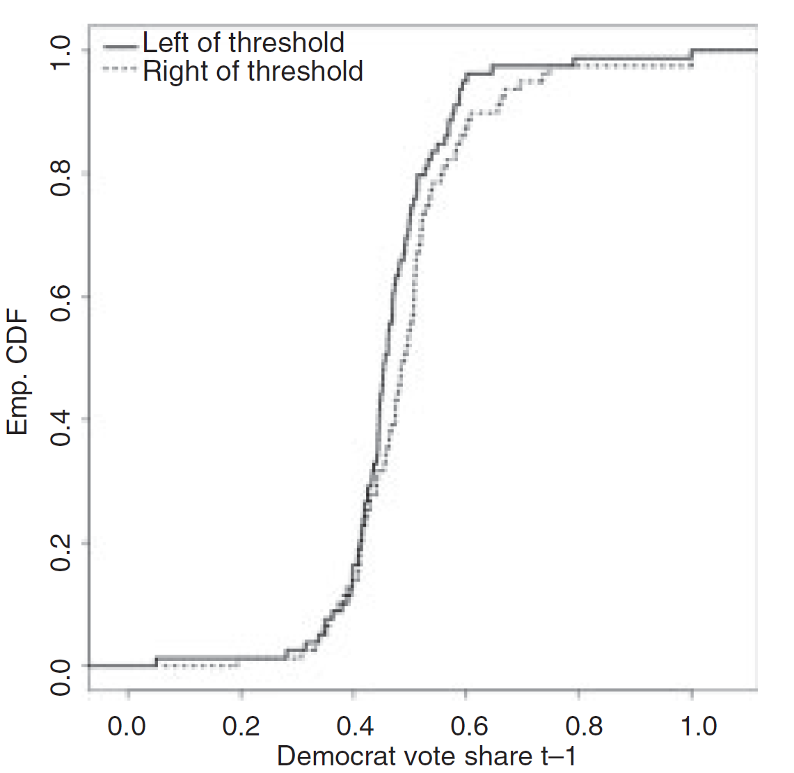
Furthermore, in a similar paper, Frölich and Huber (2019) notes that if all the confounders \(\mathbf{W}_i\), such that \(D_i \leftarrow \mathbf{W}_i \rightarrow Y_i\), are present, including them in the regression will restore identification.
Further Reading
- Cattaneo, Idrobo, and Titiunik (2020, 2024) — A Practical Introduction to Regression Discontinuity Designs, Cambridge Elements. Two volumes covering foundations (2020) and extensions (2024), serving as the definitive practitioner guides for RDD.
- Noack and Rothe (2024) — Bias-Aware Inference in Fuzzy Regression Discontinuity Designs, Econometrica. Develops inference procedures for fuzzy RDD that account for bias from local polynomial estimation.
- Armstrong and Kolesar (2020) — Simple and Honest Confidence Intervals in Nonparametric Regression, QJE. Proposes honest confidence intervals for RDD that are valid under weaker smoothness assumptions; implemented in the
RDHonestR package. - The rdpackages.github.io website is the definitive resource for the full suite of RDD software, including
rdrobust,rddensity,rdmulti,rdlocrand, andrdpower.
Angrist, Joshua D, and Jörn-Steffen Pischke. 2009. Mostly Harmless Econometrics: An Empiricist’s Companion. Princeton university press.
Angrist, Joshua D, and Miikka Rokkanen. 2015. “Wanna Get Away? Regression Discontinuity Estimation of Exam School Effects Away from the Cutoff.” Journal of the American Statistical Association 110 (512): 1331–44.
Asher, Sam, and Paul Novosad. 2020. “Rural Roads and Local Economic Development.” American Economic Review 110 (3): 797–823.
Calonico, Sebastian, Matias D Cattaneo, Max H Farrell, and Rocio Titiunik. 2019. “Regression Discontinuity Designs Using Covariates.” Review of Economics and Statistics 101 (3): 442–51.
Canay, Ivan A, and Vishal Kamat. 2018. “Approximate Permutation Tests and Induced Order Statistics in the Regression Discontinuity Design.” The Review of Economic Studies 85 (3): 1577–1608.
Cattaneo, Matias D, Nicolás Idrobo, and Rocı́o Titiunik. 2019. A Practical Introduction to Regression Discontinuity Designs: Foundations. Cambridge University Press.
Cattaneo, Matias D, Michael Jansson, and Xinwei Ma. 2020. “Simple Local Polynomial Density Estimators.” Journal of the American Statistical Association 115 (531): 1449–55.
Cattaneo, Matias D, and Rocio Titiunik. 2022. “Regression Discontinuity Designs.” Annual Review of Economics 14: 821–51.
Cerulli, Giovanni, Yingying Dong, Arthur Lewbel, and Alexander Poulsen. 2017. “Testing Stability of Regression Discontinuity Models.” In Regression Discontinuity Designs. Emerald Publishing Limited.
Dong, Yingying, and Arthur Lewbel. 2015. “Identifying the Effect of Changing the Policy Threshold in Regression Discontinuity Models.” The Review of Economics and Statistics 97 (5): 1081–92. https://doi.org/10.1162/REST_a_00510.
Frölich, Markus, and Martin Huber. 2019. “Including Covariates in the Regression Discontinuity Design.” Journal of Business & Economic Statistics 37 (4): 736–48.
Gelman, Andrew, and Guido Imbens. 2019. “Why High-Order Polynomials Should Not Be Used in Regression Discontinuity Designs.” Journal of Business & Economic Statistics 37 (3): 447–56.
Gerard, François, Miikka Rokkanen, and Christoph Rothe. 2020. “Bounds on Treatment Effects in Regression Discontinuity Designs with a Manipulated Running Variable.” Quantitative Economics 11 (3): 839–70.
Hahn, Jinyong, Petra Todd, and Wilbert Van der Klaauw. 2001. “Identification and Estimation of Treatment Effects with a Regression-Discontinuity Design.” Econometrica 69 (1): 201–9.
Hansen, Bruce. 2022. Econometrics. Princeton: Princeton University Press.
Ishihara, Takuya, and Masayuki Sawada. 2020. “Manipulation-Robust Regression Discontinuity Designs.” arXiv Preprint arXiv:2009.07551.
Kettlewell, Nathan, and Peter Siminski. 2022. “Optimal Model Selection in RDD and Related Settings Using Placebo Zones.” arXiv Preprint arXiv:2212.04043.
McCrary, Justin. 2008. “Manipulation of the Running Variable in the Regression Discontinuity Design: A Density Test.” Journal of Econometrics 142 (2): 698–714.
Pei, Zhuan, David S Lee, David Card, and Andrea Weber. 2021. “Local Polynomial Order in Regression Discontinuity Designs.” Journal of Business & Economic Statistics, 1–9.
“Consider a teacher manipulating a student \(i\) ’s latent score \(R_i^*\). Let \(\beta_i>0\) be the benefit of passing the student and \(\kappa>0\) be the marginal cost of manipulating the score. The teacher chooses the manipulated score \(R\) to maximize the net payoff, \(\beta_i 1\{R \geq\) \(c\}-\kappa\left|R-R_i^*\right|\), and the optimal manipulated score \(R_i\) is (2.1) \(\quad R_i= \begin{cases}c & \text { if } R_i^*<c \text { and } \beta_i \geq \kappa \cdot\left(R_i^*-c\right) \\ R_i^* & \text { otherwise. }\end{cases}\)”↩︎